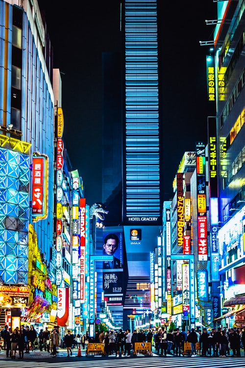
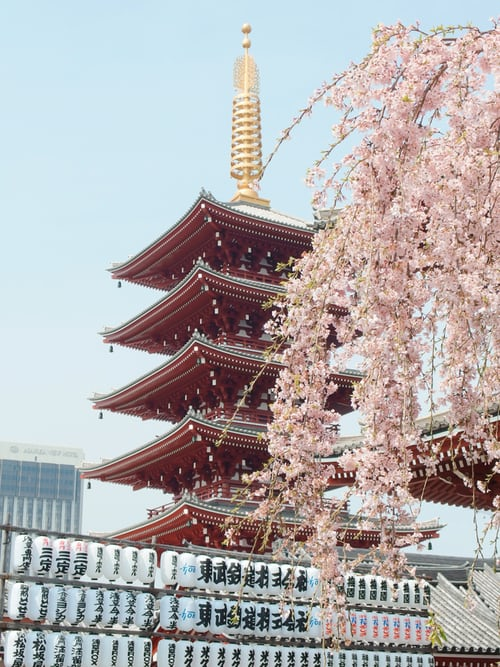
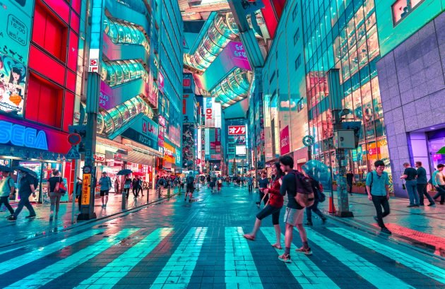
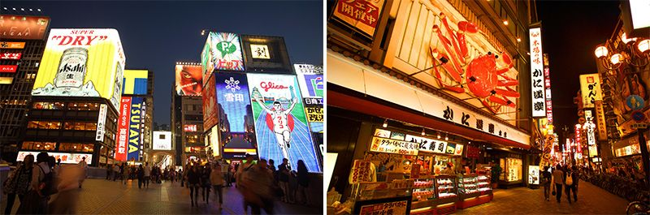
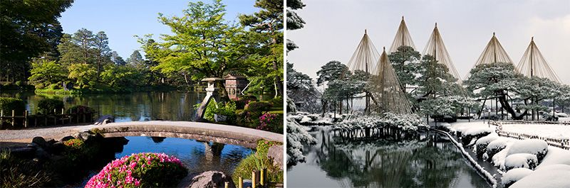
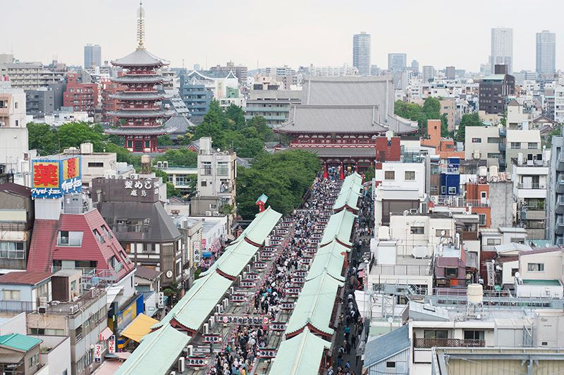

Tokyo, la plus grande ville du monde, un univers urbain électrique, trépidant,étincelant.

Lorsque Kyoto, sa voisine, était la capitale du pays, Osaka en était le centre économique. C’est la plus grande ville de l’ouest du Japon avec une population de 2,7 millions d’habitants. Le parc à thème Universal Studios Japan et l’aquarium Osaka Kaiyûkan constituent d’importants pôles d’attraction touristique. La ville est également réputée pour ses spécialités culinaires comme le takoyaki (boulettes de pâte contenant des morceaux de poulpe) et l’okonomiyaki (crêpe épaisse dans laquelle sont incorporés divers ingrédients découpés en morceaux, cuite sur une plaque chauffante). Le mot « kuidaore » signifiant manger au point d’en tomber à la renverse donne son nom à la mascotte Kuidaore Tarô, l’un des symboles d’Osaka.

Kanazawa, la capitale de la préfecture d’Ishikawa, est surtout connue pour le jardin Kenrokuen. Avec ses éléments classiques comme les étangs, les ponts et les lanternes en pierre, c’est peut-être le plus beau des « trois jardins les plus célèbres » dont il fait partie. On peut explorer à Kanazawa des quartiers de geishas et de samouraïs ainsi que le « Temple ninja » de Myôryûji, qui recèle caches et passages secrets. Les objets d’artisanat utilisant la feuille d’or, spécialité de la ville, ou les objets en laque font des souvenirs très prisés. La ligne du Hokuriku Shinkansen qui relie Tokyo à Kanazawa est entrée en service le 14 mars 2015.

Quartier incontournable pour tout touriste digne de ce nom, Asakusa est depuis l’époque d’Edo (1603-1867) l’un des lieux les plus fréquentés de la capitale ; il est considéré comme le centre névralgique du shita-machi, quartier populaire de Tokyo. Son attraction principale est le temple Sensôji, le plus ancien de la ville. L’entrée la plus connue de ce lieu sacré est le Kaminarimon, le portail du tonnerre qui ouvre sur la rue Nakamise et ses nombreux magasins de souvenirs menant jusqu’au temple. Beaucoup de touristes se rendent à Asakusa également pour ses restaurants et commerces variés, dont certains possèdent un long passé et une tradition ancienne, et pour sa proximité avec la désormais célèbre tour Tokyo Skytree.
